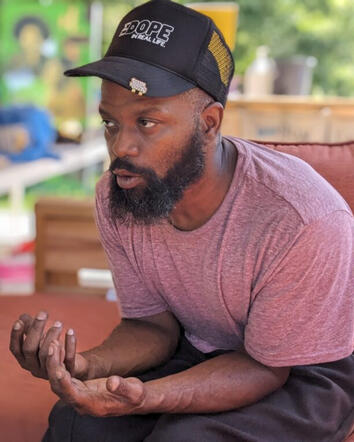

Duron Chavis (b.1980)
Urban Farmer. Educator. Change Maker
Duron Chavis has been a pivotal figure in Richmond’s community advocacy landscape for over two decades. He began his journey in 2003 as a volunteer at the Black History Museum and Cultural Center of Virginia, where he founded Happily Natural Day, a festival rooted in Black pride, cultural awareness, and social change.
Since then, Chavis has led a range of efforts focused on land, food, and racial justice—from launching the Richmond Noir Market to developing community gardens, orchards, and farms throughout the city. He is a founding member of the Central Virginia Agrarian Commons and currently manages multiple urban farms as part of a broader mission to build food sovereignty and community wealth.
His work has earned widespread recognition, including Style Weekly’s Top 40 Under 40, its Power List, and Personality of the Year by the Richmond Times-Dispatch. Chavis continues to advance culturally grounded, community-led approaches to urban agriculture and systemic equity.
← Back to People